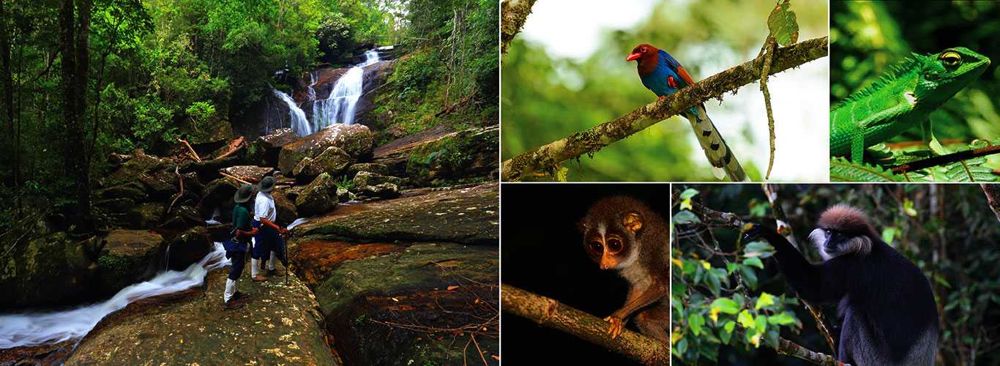

Natural and Endimism
Man and Biosphere:The Sinharaja Forest Reserve, the best-known rainforest in Sri Lanka, is well worth a visit from anyone who is interested in the natural resources of this country. It has been declared a World Heritage Site, because of its unique and high biodiversity.
Sinharaja is also a Man and Biosphere Forest Reserve, and a large proportion of the flora in this forest is endemic to the country. Some species are endemic to the Sinharaja Forest itself. Sinharaja also has many species of endemic fauna.
Situated in the south-west lowland wet zone of Sri Lanka and falling into the Sabaragamuwa and Southern provinces, Sinharaja is surrounded by Napola Dola, Koskulana Ganga (north), Maha Dola, Gin Ganga (south-west), the Kalukandawa Ela, Kudawa Ganga (west), Beverley Tea Estate and Denuwa Kanda (east).
As a rainforest with its rich and complex diversity of vegetation, Sinharaja provides habitats for a variety of animals. Although dependent on plants for food, animals also carry out certain functions vital to the growth of some plants. Pollination and seed dispersal are two of these.
Sinharaja has two main forest types. One is the Dipterocarpus forests that occur in the valleys and on their lower slopes. Here almost pure stands of Hora (Dipterocarpus. Zeylanicus) and Bu Hora (Dipterocarpus. Hispidus) can be seen.
The other forest type is the secondary forest and scrub that now occurs where the original forest cover has been removed by shifting cultivation or other tree removal operations. In other places rubber and tea plantations have replaced the forest. Mesua-Doona (Shorea) forest, the climax vegetation over most of the reserve, covers the middle and upper slopes above 500m.
Sinharaja has the benefit of both monsoons. Rainfalls are regular during the south-west monsoons, May-July, the north-east monsoons and November-January, except February when the conditions are dry.
An IUCN - International Union for the Conservation of Nature and Natural Resources - technical evaluation of Sinharaja states that 'Sinharaja is the last extensive primary lowland tropical rain forest in Sri Lanka. It holds a large number of endemic species of plants and animals, and a variety of plants of known benefit to man.
Sinharaja Forest Reserve is the last viable remnant of Sri Lanka's tropical lowland rain forest; over 60% of the trees are endemic and many of these are rare; and there are 21 endemic bird species, and a number of rare insects, reptiles and amphibians'. Endemism is high, particularly for birds with 19 (95%) of 21 species endemic to Sri Lanka present. Endemism among mammals and butterflies is also greater than 50%.
Mamals
There is evidence that there have been elephants in parts of the Sinharaja and its surrounding forests. However, their numbers have gone down over time and now there are only a few animals on the Rakwana side of Sinharaja, especially in the Handapan Ella, Thangamalai and Deepdene areas. Before the logging project started in 1971, elephants were common in the periphery of the forest. They have not been seen in the western sector since 1974.
The other large mammals that are found in Sinharaja are the Leopard (Panthera pardus), Sambur (Cervus unicolor), Fishing Cat (Felis viverrina), Rusty Spotted Cat (Prionailurus rubiginosa), Barking Deer (Muntiacus muntjak), Mouse Deer (Tragulus meeminna). Jackal (Canis aureus) and Wild Boar (Sus scorfa).
The leopard is rarely seen but there is evidence of its presence through its scats (excreta). What is interesting is that the leopard here seems to eat crabs and small mollusks as well. There are no spotted Deer (Axis axis), which is one of its favoured prey, at this elevation. Therefore the adaptation to food resources that are available. The Purple-faced Langur (Presbytis senex) is an endemic. The only other primate found is the Toque or Rhesus Monkey (Macaca sinica) but it is seen mostly in the peripheral forests.
Of the smaller mammals there are a number of species in Sinharaja. The two Small Squirrels (Funambulus layardi and F. sublineatus), one Giant Squirrel (Ratufa macroura) the smaller Flying Squirrel (Petynomys fuscocapillus), the Badger Mongoose (Herpestes vitticolis), the Brown Mongoose (Herpestes fuscus), the Ring-tailed Civet (Viverricula indica), the Golden Palm Civet (Paradoxurus zeylonensis) and the Porcupine (Hystrix indica). The Otter (Lutra lutra) is also found in Sinharaja. There are also reports of sightings of the Pangolin (Manis crassicaudata.) but it is rare.
There are a number of rats, the Bandicoot, shrews and bats inhabiting this rainforest.
The larger mammals that are threatened are the leopard and the elephant. The present status of the leopard in Sinharaja has not been studied closely and therefore the population of leopards is not known. Even the exact population of elephants in Sinharaja is not known. Since it is a large animal and quite visible, it seems that only a few animals are left from the large number reported earlier.
Birds
Sinharaja hosts a variety of birds. Over 147 species have been recorded. This variety of species is possible because of the availability of specific habitats that range from 300 to 1500 meters. There are many endemic birds such as Ceylon Lorikeet ((Loriculus beryllinus), Layard's Parakeet (Psittacula calthropae), Ceylon Jungle Fowl (Gallus Lafayetti), Spur Fowl (Galloperdix bicalcarta), Ceylon White-headed Starling (Sturnus albofrontatus), Ceylon Wood Pigeon (Columba torringtoni), Grey Hornbill (Ocyceros gingalensis), Spotted-wing Thrush (Zoothera spiloptera), Rufous Babbler (Turdoides rufescens), Brown- capped Babbler (Pelleurneum fuscocapillum), Ashy-headed Laughing Thrush (Garrulax cinereifrons), Ceylon Blue Magpie (Cissa oronata), White Headed Starling (Sturnus albofrontatus), Green-billed Coucal (Centrophus chlororhynchus), Red-faced Malkoha (Phaenicophaeus pyrrhocephalus),Ceylon Hill Mynah or Grackle (Gracula ptilogenys) and Legge's Flowerpecker (Dicaeum vincens) are some of the endemic birds found at Sinharaja.
The Serendib Scops Owl (Otus thilohoffmanni) was discovered for the first time in 2001 by Deepal Warakagoda and Nanda Senanayake in the Sinharaja forest. Of interest is the presence of Sri Lanka Broad-billed Roller (Eurystomus orientalis), sightings of which have decreased markedly in recent years.
A regular sight at Sinharaja is the flocks of birds of mixed species that go through the forest. It is a mutual relationship observed among birds, a method by which they improve the availability of feed. The food of one species does not necessarily interest another.
Another interesting feature is that there are different groupings of bird species foraging at the different levels of the forest. There are different species moving in the canopy, sub canopy, undergrowth and forest floor. A team from Massachusetts, Colombo and Sabaragamuwa Universities studied this aspect of bird activity.
Reptiles
There are records of 21 species of snakes, including the Python (Python molurus), found in Sinharaja. Five species of lizard found in Sinharaja are the arboreal Green Forest Lizard (Calotes calotes), the high-pitched whistling Whistling Lizard (Calotes liolepis), the Hump-nosed Lizard (Lyiocephalus scutatus) with its gular fold, the Earless Lizard (Otriocephalus scutatus) and the Rough Horned Lizard (Cerataphora aspera). The rare Horned Lizard is restricted to parts of Sri Lanka's wet zone below 900m elevation.
The Water Monitor (Varanus monitor) is found in Sinharaja but the Land Monitor (Varanus bengalensis) has not been seen at this elevation.
Amphibia
There are many amphibians in this rain forest which provides an ideal habitat for them. Kelum Manamendra Arachchi, who has worked in Sinharaja for a long time says that 'Half the number of amphibians in Sri Lanka are found in Sinharaja and half of the endemic amphibians are also from this forest.'
Kelum and Rohan Pethiyagoda have found many new species of frogs at Sinharaja and are likely to find more. It is also extremely likely that many species of amphibians have become extinct even before they were known to man. Kelum and Rohan have put out a very well researched book in Sinhala on our amphibians.
Fish
Some threatened freshwater fish found in Sinharaja are Comb Tail (Belontia signata), Smooth-breasted Snakehead (Channa orientalis), Black Ruby Barb (Barbus nigrofasciatus), Cherry Barb (Barbus titeya) and Red-tailed Goby (Sicydium halei).
Plants
Sinharaja has a complex vegetation structure. This is the same as in an intricate rain forest ecosystem. At first glance, the forest seems to be a chaotic muddle of vegetation. However, a closer look reveals that the vegetation can be categorized on the basis of several factors such as life-forms (trees, shrubs, herbs and woody climbers), a strata or groups of plants living under similar conditions of light and moisture with each group having its own "life-style"
There are many 'layers' of the forest - the canopy, sub canopy, under-storey, shrub layer and ground layer. Then there are the vegetation types like, stranglers, epiphytes, parasites and saprophytes. Emergents are trees that grow above the canopy layer of the forest.
The trees that form the canopy, or top layer of trees, usually reach heights of around 30 to 45 meters. The canopy is well packed with tree crowns and is usually devoid of emergent trees. The second layer of trees is the under storey which consists of trees that are not so tall. The shrubs make up the third layer of the complex forest vegetation.
Most plants can stand on their own in that they can get their nutrition made up of minerals from the soil and produce food using sunlight, water and carbon dioxide from the air. This process is called photosynthesis. There other plants that cannot stand on their own and are dependent on other hosts for food, water or support, like climbers, epiphytes and parasites.
The plants could either be photosynthetic, thus nutritionally self sufficient or non-photosynthetic like the saprophytes; some, on the other hand, are semi or totally parasitic. Semi parasites take water from hosts plants i.e. Loranthus - Pilila in Sinhala, - while a full parasites absorb both water and nutrients - Cuscuta - aga mula nathi wal in Sinhala.
Epiphytes, orchids for example, are plants that cannot stand by themselves but are not dependent on the host plant for their food. The real objective of an epiphyte is to climb on to a big tree and get more sunlight for food production. Parasites need a host plant and take their food off the host plant as well. Saprophytes are those types of plants that live on the juices of dead plant and animal matter.
Stranglers are plants that start off being dependent on other plants for support but later establish their own support and tend to be detrimental to the original host. A good example is, though not from Sinharaja, the Nuga (Ficus bengalaensis), which starts off as an epiphyte on a host plant but grows steadily and completely chokes up the host plant. It grows into a massive tree leaving no trace or evidence of what was its host plant. In a rain forest vines too can be stranglers.
The plants could also represent several stages of maturity e.g. seedlings, saplings, poles, etc. As expected, the variety of combinations that could exist in the forest can be enormous. These are the factors that form the basis of the vegetation structure of the forest.
A tree fall gap is a gap arising in the canopy due to the collapsing of an old tree. The thick canopy allows minimum sunlight to reach the ground level. Therefore seedlings and saplings wait for years on the forest floor before a gap appears .The moment it occurs, a hoard of young plants shoot up to take their place in the canopy. Tree fall gaps in Sinharaja have been studied by Yale University.
A variety of plants of known benefits to man are present in Sinharaja. One of which is the palm Kitul (Caryota urens) used to get jaggery, which is a substitute for sugar used widely in areas where this tree grows. Wewal (Calamus sp) is used in the cane industry, Cardamom (Elattaria ensal) a spice, Shorea sp. (for flour), dun Shorea sp. (for varnish and incense) and Weniwal (Coscinium fenestratum) for medicinal purposes, are used intensively by villagers. A list of 202 plants, together with their endemicity and uses has been drawn up.
Nimal and Savithri Gunatilleke in their many years of research in Sinharaja have found that of Sri Lanka's 830 endemic species, 217 trees and woody climbers are found in the lowland wet zone. Of these, 139 (64%) have been recorded in Sinharaja, 16 of which are considered to be rare.
Other rare endemics are the palm Loxococcus rupicola and Atalantia rotundifolia, the latter being restricted to Sinhagala at 742m. Of 217 recorded species of trees and woody climbers, 40% have low population densities (less than 10 or fewer individuals per 25ha) and 43% have restricted distributions, rendering them vulnerable to further encroachments into the reserve.
In1968, a government directive was issued to extract timber for the plywood sawmill and chipwood complex established at Kosgama. Logging was carried out from 1971 until 1977, when logging was banned, largely due to public pressure brought about by the Wildlife and Nature Protection Society, which played a leading role in the protests and objections to this indiscriminate logging of a very important and valuable natural resource.
At present, the reserve has 6,500-7,000ha of unlogged forest. Since 1977, the Forest Department has given high priority to protecting the reserve and in 1978 began planting (Pinus caribaea) along the periphery to establish a live boundary. More recently, betel nut palm (Areca catechu) has been used for this purpose.
In order to ensure the strict protection of the reserve for scientific and aesthetic reasons, a scheme of zonation and management is proposed for areas outside the reserve. The creation and propagation of essential forest products, for sustained utilisation, in areas outside the reserve is intended to meet local needs and thereby eliminate former dependence on resources within the reserve.
Of the many constraints to the protection of Sinharaja, encroaching cultivations are probably the biggest problem, particularly along the southern boundary. There are many socio-economic issues that need to be looked into. There are people and organisations in the immediate vicinity of the reserve, who are dependent of certain forest products for their livelihood. Alternate sources of these products have to be found for these people.
The most important traditional minor forest products used are Kitul, Cane and to a lesser degree medicinal plants.
These activities have now been restricted to forests surrounding the Sinharaja reserve. Illicit gem mining was once a serious problem in eastern parts of the reserve and was organised mostly by wealthy merchants from outside the Sinharaja region. This activity though reduced now has to be stopped completely.
The lack of a uniform land-use policy and the multiplicity of governmental and semi-governmental agencies involved in land-use planning in Sri Lanka are the major administrative constraints in evolving a suitable protection plan for Sinharaja. For the moment, transactions related to lands surrounding the reserve are suspended under presidential order until such time, as the conservation plan for the reserve is ready for implementation.
